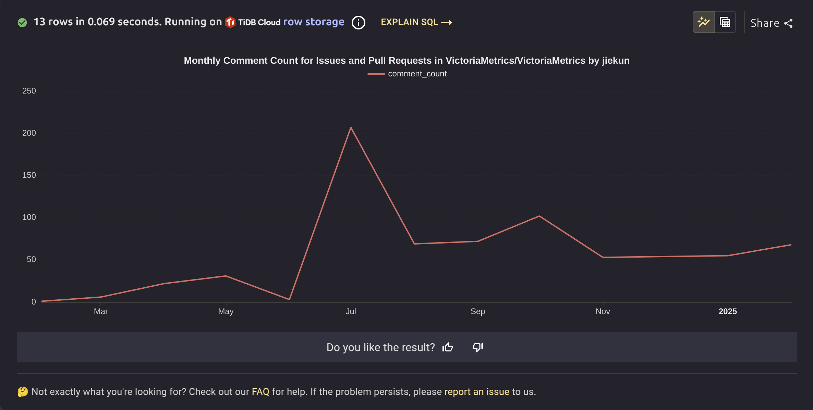

2024 Annual Review: My New Role At VictoriaMetrics
This blog post is written before my trip to KubeCon London. Exactly one year ago, I met with the VictoriaMetrics team in Paris for the first time. So, this review is about what I have been doing during this past year and how these things have changed my life.
Contributing Without Pull Requests: Learning Through Action
At first, I didn’t know much about VictoriaMetrics. We were using Prometheus and Thanos, well-recognized metrics monitoring solutions. Like everyone else, we had performance and other issues, so we started looking for alternatives.
At that time, there were already some companies using VictoriaMetrics at a large scale in China, with some case study blog posts. We saw them and started a PoC(proof of concept). It took months, and I, as the one in charge of the PoC, asked some questions in Slack and GitHub. Everything up to now has nothing special, every developer would do the same.
I noticed that many questions were duplicated and already explained in the document. Therefore, in order to reduce the pressure on the VictoriaMetrics engineers (so they would have time to help with my questions), I started to answer questions based on my limited knowledge or the information available in the document.

By doing so, I looked through many documents and sometimes read the source code to find the answer. It’s very helpful, both for the community and me:
- Open-source community always lack first-line supporter, not matter how good the document is. Most people are asking questions, while only a few are answering. The vast majority of these few are core developers because they understand everything, and a very small number are some interested users who try to help each other.
- Questions force me to read and learn. That’s a good first step to get familiar with a open-source project. Sometimes it could be the only way, because you may not have a chance to work with it in your day job (e.g., a Go developer maintaining a payment service trying to learn about Kubernetes).
I am very grateful that these supporting things are receiving attention and sometimes I can see comments like “thank you, this solved my issue”. At least it proves that (sometimes) my comments are helpful.
Everything happens for a reason. The documentation and source code of VictoriaMetrics are well-organized; at least they didn’t give me too much trouble while reading them.
I’m not sure if this “learn by answering” approach would work in other projects. For example, take a look at the issue list of Kubernetes: If the answer is available in the documentation, that would be ideal. If you need to delve into the code, I believe that would be much more challenging.
In summary, if you want to learn and contribute to open-source projects, choosing a good project and starting by addressing real user issues is a good approach, especially for developers who may not have chance to use it in their day job.
My New Role At VictoriaMetrics
I really like this scene in the movie “Catch Me If You Can”, but I want to make a slight modification to it.
I actually failed the technical interview. But, fortunately, I am not bothered by that and continue my “unofficial” support within the VictoriaMetrics community. Because it helps me gain knowledge and sometimes a simple word of thanks.
Even more fortunate, the team was willing to accept someone who didn’t pass the interview, giving me the opportunity to turn supporting into an official role.
How My Life Was Changed
It’s a remote job, so every day I find myself sitting at home in front of the laptop. Meetings, tasks, everything is conducted virtually online.
Without a commute, I can take time to play sports in the mornings or after work. On the flip side, without a company canteen, I now have to cook for myself or order delivery.